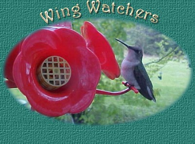
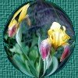
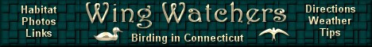
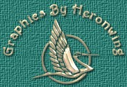

Nature Tales #4
Click here to break out of frames.
|
Wing Watchers would like to entertain you, with an occasional short story or observation of the funny but interesting things that have happened to us during our quest to observe birds and nature. These are true Tales and are given to you, perhaps, to enjoy or even help you relate to a natural happening of your own observations. This section will be updated with a new story or observation as they happen for us. That's the beauty of Mother Nature, you never know what will happen next. Happy observing. |

"A Sharp Visitor"
By Dave Pelletier. Photos and observations by Judy Pelletier.
Our backyard feathered visitors were all very happy, thank you. Some of them, the Finches, Nuthatches and Chickadees, were so involved in the many feeders we have, that perching spots on the feeders was at a premium. Scare tactics and outright pecking at each other, assures the bolder bird a good place. Other birds like the Sparrows, Doves and Juncos, scratch the ground below the feeders, finding seeds that fell or seed that was layed there for them. And still, others like our friendly Titmouses, various species of Woodpeckers and the Nuthatches, are fondly attached to our homemade suet that hangs in cages or onion bags from the trees limbs.
Yes, everything was perfect, everyone and every bird was happy. Then SWOOSH!!! A small Hawk, the size of a Blue Jay, came ripping through the yard straight toward our feeder area. Swoosh, turn on a dime, and line up on a potential meal really fast, it had to be an "Accipiter". But which one could it be?
"Accipiters" are long tailed, short winged Hawks that happen to just love eating little birdies. North America has three different species of these bird eaters. The Northern Goshawk is a large Accipiter, about the size of a Red-Tail Hawk, big. Another, the Cooper's Hawk, is about the size of a Crow and has a rounded tip to the end of its long tail. The third is the Sharp-shinned Hawk. This little troublemaker is only the size of a Blue Jay and has a squarish look to its long tail. Sometimes a notch will appear when the Sharpy has its tail folded. You may notice this in the photograph that Judy took, above.
Anyway, Judy and I figure this guy is the "Sharpy" and we found ourselves captivated in its maneuvering and hunting technique. The Hawk missed on its first lunge and all the birds scattered. Some headed straight away to the nearby woodland border, a Downy Woodpecker actually froze himself to the feeder, no movement. The others quickly hit the ground underneath a large tangle of Rasberry bush, figuring they would be safe. Apparently this hiding tactic worked or our little Hawk is somewhat inexperienced. The hungry And persistant Sharpy, dove onto the top of the Rasberry patch but couldn't penetrate the tangles. Over and over again, it would hop up as far as it could and try to crash through to the meal below. We thought this bird was going to break its wings from the force but we never even saw a feather come loose. Our little "Sharp Visitor" wasn't lucky this time and we're glad. He does need to eat but PLEASE, not in front of us. |
Nature Tale#1
Nature Tale#2
Nature Tale#3
Nature Tale#5


| Except
as noted, site content and photographs copyright � 2004 Dave
Pelletier aka Wing Watchers, all rights reserved. |

Home |Bird Photos 1 |Bird Photos 2 |Bird Sightings |Directions
|Wallpaper
Birding Tips |Email
|What? |Fledglings
|Banners |Links
|Nature Photos
Crawly Things 1 |Crawly Things 2 |Cathi's Page |Awards and Webrings
|
|